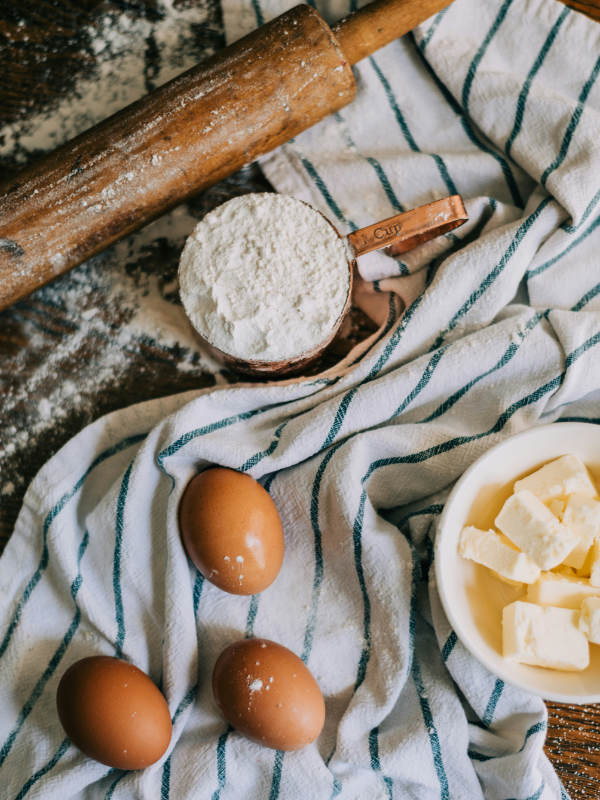
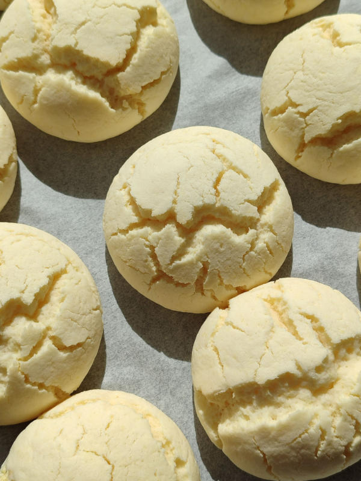
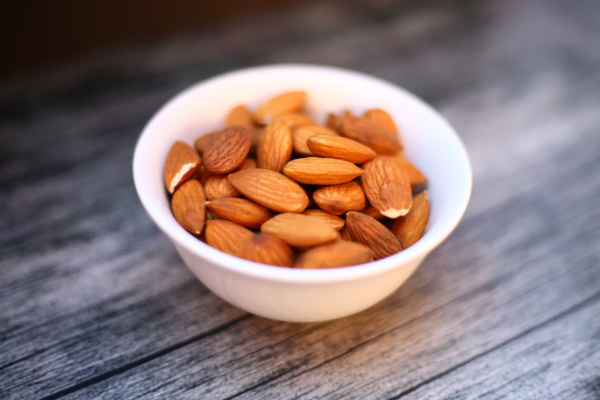
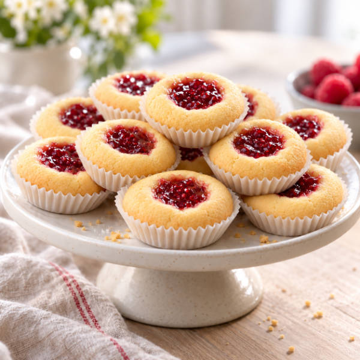
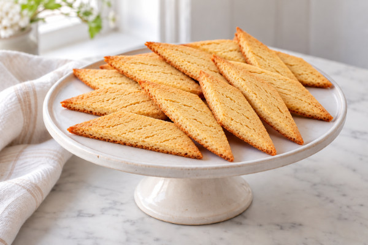
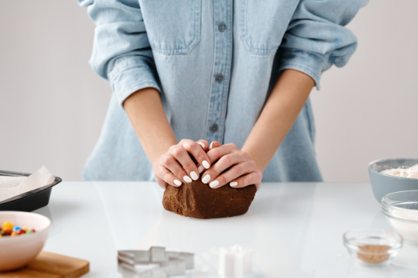
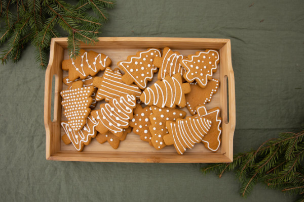

Recept på sju klassiska småkakor att baka och bjuda på.

Foto: Lauren Gray, Unsplash
Om sju sorters kakor
Att bjuda på sju sorters kakor är en klassisk svensk fikatradition och syftar på det minsta antalet kaksorter som etiketten tidigare föreskrev att kakfatet ska innehålla. Tanken är att erbjuda ett varierat urval av småkakor så att det finns något för olika smaker: spröda, mjuka, chokladiga, kryddiga och fruktiga kakor. Utöver småkakorna serveras även vetebröd och tårta. Traditionen förknippas ofta med kafferep och högtider men passar lika bra till vardagsfika eller kalas och har funnits sedan 1800-talet.
På den här sidan finns recept på sju småkakor att prova på!
Drömmar

Foto: Nur Tok, Pexels
Drömmar är mycket spröda småkakor med mild vaniljsmak som är lätta att baka. Hjorthornssalt gör att kakorna får sin karakteristiska porösa och ljuvligt frasiga konsistens.
Ger 40-45 kakor.
Ingredienser
100 g smör
3 dl strösocker
1 dl rapsolja
2 tsk vaniljsocker
1 tsk hjorthornssalt
4 dl vetemjöl
Gör så här
Sätt ugnen på 150 °C.
Rör smör och socker mjukt.
Tillsätt oljan, lite i taget, under vispning.
Blanda vaniljsocker och hjorthornssalt med lite av mjölet och rör ned blandningen i smeten. Tillsätt sedan resten av mjölet.
Rulla små bollar av degen och lägg dem på plåtar med bakplåtspapper.
Grädda mitt i ugnen i cirka 15-20 minuter och låt kallna på plåten.
Finska pinnar

Foto: Lorena Galeano, Pexels
Finska pinnar är spröda mördegskakor med mandel och pärlsocker på toppen. Trots namnet är de en välkänd klassiker på svenska kakfat.
Ger ca 60 kakor.
Ingredienser
200 g smör
1 dl strösocker
4,5 dl vetemjöl
1 tsk vaniljsocker
1 dl mandelmjöl
1 äggvita
Garnering
ca 1 dl hackad sötmandel
2 msk pärlsocker
Gör så här
Sätt ugnen på 175 °C.
Blanda mandel, mjöl och socker och arbeta ihop med tärnat smör till en deg. Låt vila i kylskåp ca 30 minuter.
Dela degen i 8 delar och rulla varje del till en 30 cm lång längd.
Lägg längderna på en plåt med bakplåtspapper.
Vispa upp äggvitan lätt och pensla längderna.
Strö över hackad mandel och pärlsocker och dela längderna i ca 4 cm långa bitar. Sära bitarna lite så att de inte fastnar i varandra.
Grädda mitt i ugnen i cirka 10-12 minuter.
Hallongrottor

Bilden är AI-genererad (ChatGPT).
Hallongrottor är mördegskakor med en liten grop fylld med ljuvlig hallonsylt. De är både enkla att baka och uppskattade på kakfatet.
Ger 20-24 kakor.
Ingredienser
200 g smör eller margarin
1 dl strösocker
2 tsk vaniljsocker
4,5 dl vetemjöl
1 tsk bakpulver
1 dl fast hallonsylt
Gör så här
Sätt ugnen på 200 °C.
Arbeta snabbt ihop smör, socker, vaniljsocker, vetemjöl och bakpulver till en deg. Gärna i matberedare.
Rulla degen till små bollar och lägg dem i små kakformar ca 5 cm i diameter.
Gör en grop i varje kaka med ett finger eller skaftet på en sked.
Fyll groparna med hallonsylt.
Grädda i cirka 12-15 minuter och låt sedan svalna på galler.
Kolasnittar

Bilden är AI-genererad (ChatGPT).
Kolasnittar är avlånga, lite sega småkakor med smak av sirap och vanilj. De skärs i sneda bitar direkt när de kommer ut ur ugnen.
Ger 20 kakor.
Ingredienser
100 g smör
1 dl strösocker
2 msk mörk sirap
2,5 dl vetemjöl
1 tsk bakpulver
1 tsk vaniljsocker
Gör så här
Sätt ugnen på 175 °C.
Rör smör, socker och sirap mjukt.
Blanda vetemjöl, bakpulver och vaniljsocker. Arbeta sedan ihop med smörsmeten till en deg.
Dela degen i två delar och rulla dem till längder ca 40 cm långa.
Lägg längderna på en plåt med bakplåtspapper och platta till dem.
Grädda mitt i ugnen cirka 12 minuter.
Låt kakorna svalna något och skär längderna i sneda bitar medan de fortfarande är varma.
Schackrutor

Foto: Nicole Michalou, Pexels
Schackrutor är klassiska småkakor med ett dekorativt rutmönster av ljus och chokladsmakande mördeg. Kakorna blir spröda och ser mycket läckra ut på kakfatet. De imponerar med sitt utseende men är väldigt enkla att baka.
Ger ca 50 kakor.
Ingredienser
200 g osaltat smör
1 dl strösocker
4,5 dl vetemjöl
Ljus deg
2 tsk vaniljsocker
Mörk deg
2 msk kakao
Gör så här
Ta fram smöret så att det hinner bli rumsvarmt.
Vispa ihop smör och socker till en jämn smet.
Tillsätt vetemjöl, lite i taget, och fortsätt röra tills det blir stora smulor.
Dela degen i två lika stora delar.
Arbeta in kakaon i den ena delen och vaniljsocker i den andra så att du får en ljus och en mörk deg.
Dela degarna i två delar så du får två ljusa och två mörka delar.
Rulla ut till längder och tryck till dem mot bakbordet så längderna får platta kanter. Lägg dem tätt ihop, med två ovanpå de andra så de bildar ett litet schackmönster.
Låt vila i kylen 1-2 timmar.
Sätt ugnen på 200 °C.
Ta fram längden och skär ca 3-4 mm tjocka skivor.
Lägg kakorna på en plåt med bakplåtspapper och grädda mitt i ugnen i ca 8-10 minuter.
Pepparkakor

Foto: Katrin Bolovtsova, Pexels
Pepparkakor är tunna, kryddiga kakor som många förknippar med jul. Degen smaksätts med kanel, ingefära och kryddnejlika och får vila över natten, så att den blir lätt att kavla och stansa ut i olika former.